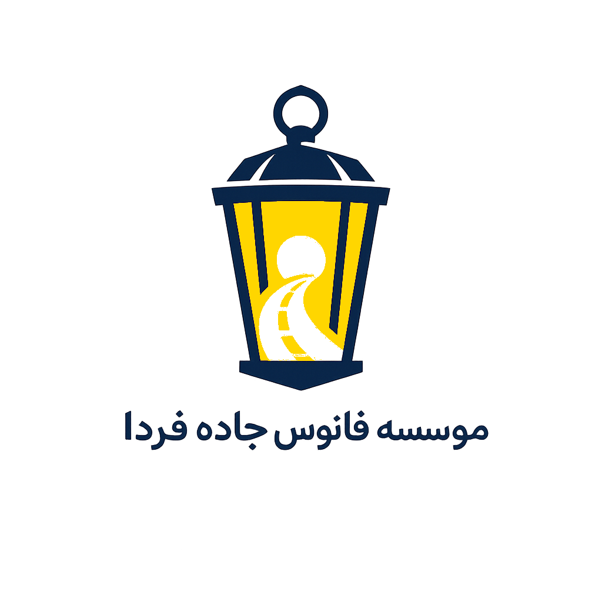
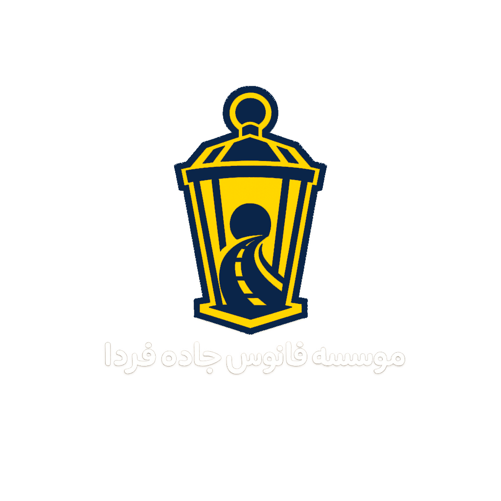

Social support for women in Tehran
Supporting women toward safer, more independent futures
Fanous Jadeh Farda supports women affected by social harm. By bringing together institutions, entrepreneurs, benefactors, and professional organizations, the institute creates clearer paths to social support, education, skills, and employment.


Support through connection
Using shared capacity to provide meaningful support
Partnerships with the Imam Khomeini Relief Foundation, entrepreneurs, benefactors, and technical and vocational organizations help connect each need with a more suitable path toward education, employment, and social support.